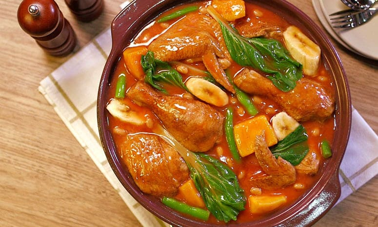

Chicken Pochero Recipe
What is Chicken Pochero?
Chicken Pochero is a Filipino stew that is typically made with
chicken, tomato sauce, chorizo, potatoes, green beans,
cabbage, and saba bananas123.
The dish is usually served with hot rice and is a popular comfort food in the Philippines.
Ingredients
3 tablespoons olive oil
2 plantains, peeled and quartered
2 small potatoes, quartered
1 onion, chopped
2 cloves garlic, minced
4 pounds chicken legs, thighs, and wings
2 (4 ounce) links chorizo de bilbao (spicy Spanish semi-cured sausage), quartered
salt and pepper to taste
water to cover
2 tomatoes, diced
1 (15.5 ounce) can garbanzo beans, drained
1 small head cabbage, chopped
Instructions / How to Cook
1. Heat the olive oil in a large pot over medium heat; fry the plantains and potatoes in the hot oil until crisp on the outside, 5 to 7 minutes. Remove from the pot and set aside, keeping the oil in the pot.
2. Cook and stir the onion and garlic in the hot oil until the onion is translucent, 5 to 7 minutes. Add the chicken and
chorizo; season with salt and pepper. Cover the pot and cook for 5 minutes.
3. Pour enough water over the chicken to cover completely; bring to a simmer and cook for 10 minutes. Add the tomatoes, cover, and cook another 10 minutes. Stir the plantains, potatoes, garbanzo beans, and cabbage into the mixture. Cook covered until the cabbage is wilted and everything is hot, about 5 minutes more. Serve hot.